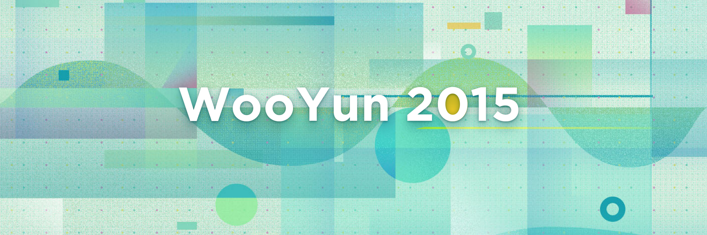
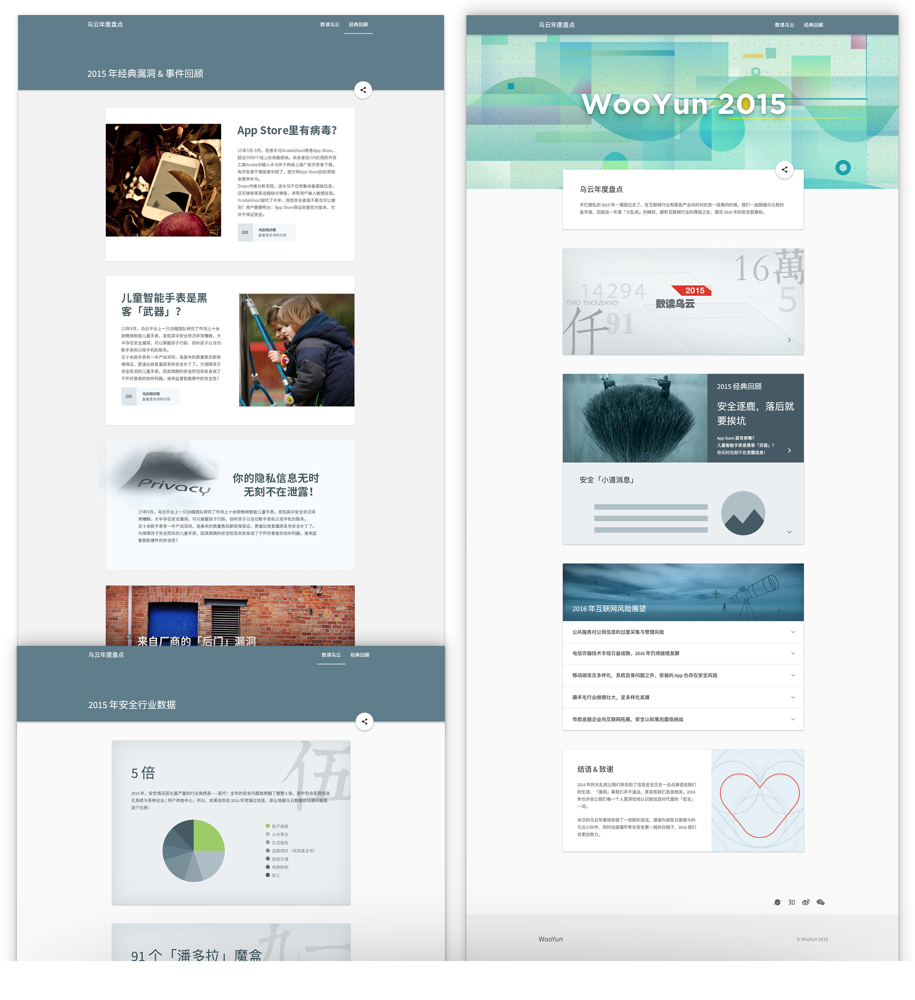
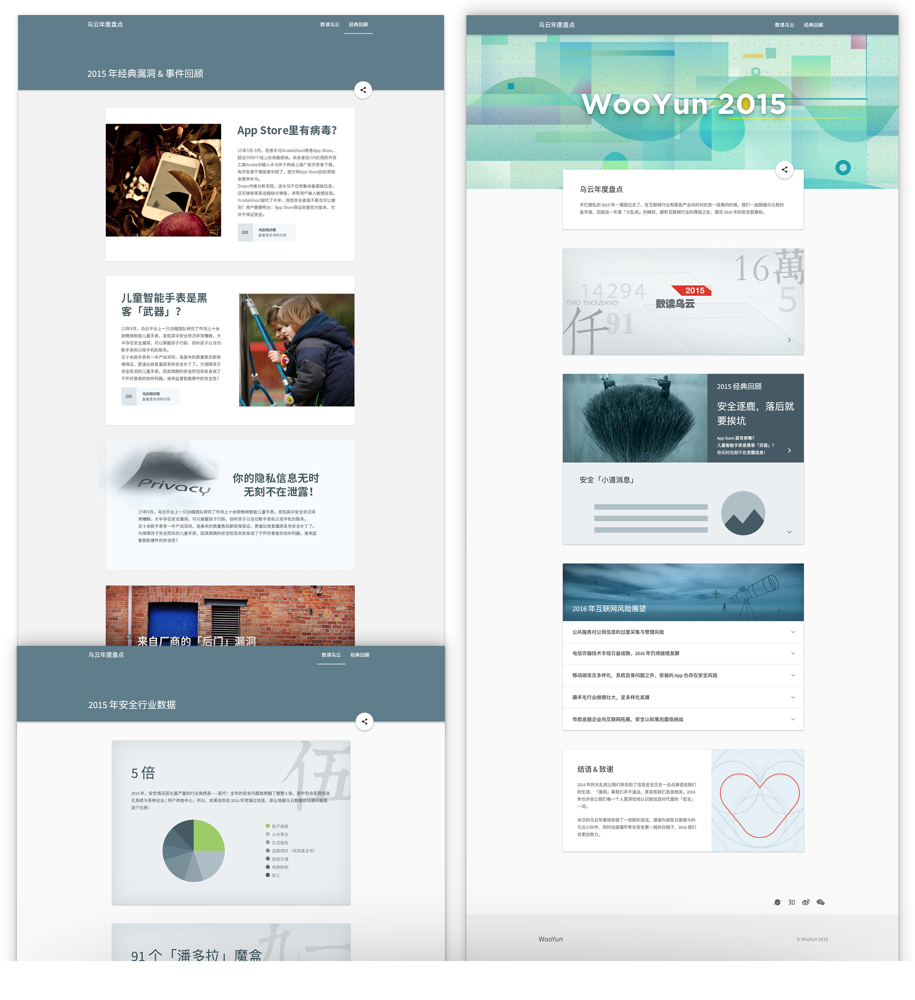

Web Design for WooYun Report 2015
- 2015.12 – 2016.1
- Interaction Design | UI Design | Illustration Design

About the Project
WooYun Report is a site to show what vulnerablities were focused best and what security issues were most influential and dangerous last year. And all data and articles were based on WooYun.org in order to present to all users what we did last year and alert people to prevent the risk from security vuls.
My Role
I was the interaction and UI designer to manage this project, brainstorming with editors, organizing the contents, and cooperating with the front end engineer and the back end engineer to ensure to put out with a gorgeous, mobile-friendly and stable website. As always, I drew some delighted illustrations here.
Main Pages
Mobile Friendly
 

Wow! Time really does fly when you’re having fun.
I’m afraid this case study is just about over. But I've prepared a few more for you so there’s no need to panic (yet).Next >>
see what I did for WooYun Summit 2015